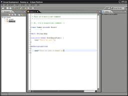

UEDT
About the UEDT
The UEDT (Unreal Engine Development Tools) is a Eclipse Plugin that provides tools for varius task while working with Unreal Engine based games. Most of these games come with the developer tools like UnrealEditor, UDebugger, ucc and other depending on the game.
The UEDT will try to help you with these tools. You may complain that there are allready many tools available for the Unreal Engine, but they were never packed together. Before using Tool A and Tool B, you have to look for them, download and learning them.
For running the UEDT Eclipse 3.x is needed. As of Eclipse Java? based nature, it should run on any platform that support Java. You need at least the JSE 1.4.x. There is no 1.5.x code within this project for the moment. I might switch to it later. But thats nothing about to concern at the moment.
I should at some more info...or? Later...
Features
The UEDT can have many features, as the extensions were made public everyone can extend it and provide his own tool.
Feature List
- UnrealScript Editor
- Syntax highlighting
- Refactoring
- Intelli sense
- Content outline
- Folding
- Doc generation like unDox
- UDebugger support
- ?
- UMOD Editor for creating umods
- Package-Explorer
- Exporter
- General
- Wizards
- MOD Architecture Support
- Independent Project workspace
- ???
There might be more features in the future. Depending on the user wishes and what others contribute.
Pictures

Pic of UEDT 0.1.1
how to refer to images without displaying them?
The big version should only have a link, but was alltime displayed

Download
Current version: 0.1.1
[Download (binary and source)]
The current version is a very basic version. The editor highlight some source elements based on static color values. The existing wizards do nothing except of showing up.
For the next milestone the highlighting will be configurable and the wizards will take action.
How to install
Download the archive and extract it into your eclipse home directory.
After start your Eclipse environment and you should be able to open the Unreal Engine Development Tools Perspective.
Evil-Devil: Feel free to test it. I'm looking for an graphics artist who is cabable of creating icon images. Maybe someone of you?